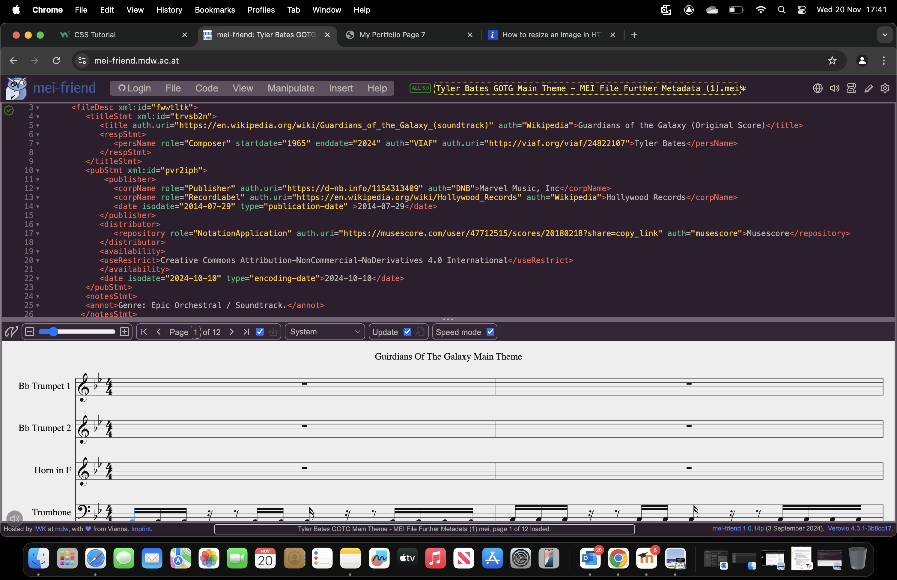

Music Analytic’s
The notesStmt element is the sixth component of the fileDesc element and is optional. If used, it contains one or more annot elements, each containing a single piece of descriptive information of the kind treated as ‘general notes’ in traditional bibliographic descriptions.

Had issue with publisher metadata, wasn’t expecting Publisher within the pubStmt element. I referred to the MEI guidlines and it stated that publisher was contained by pubStmt so I struggled to find the issue. However it was due to publisher having a Capital P rather than a lower case p, in which case it was allowed to be contained by pubStmt and not regarded as extra content.
Adding licensing data, availability as the parent element which is contained by pubStmt. Child element useRestrict contained within availability allows me to state the license applied to my score. I decide on the following license: Creative Commons Attribution-NonCommercial-NoDerivatives 4.0 International by using online tool: https://creativecommons.org/share-your-work/
Here is my final mei file with the metadata and data links correctly encoded:

Upon rendering the MEI file with GitHub metaRaw.html by placing the MEI file path in the relevant spaces after uploading the raw file to my repository, I was able to see the metadata appear at the top. However, It was displayed unformatted and just as long sentence not separated by commas. Crowded, poorly formatted and messy. You can view this here: metaRAW
Creative Commons Attribution-NonCommercial-NoDerivatives 4.0 International
I chose this license because my piece is still fairly new and it is protected by copyright and not in the public domain. Placing a non profit rule on the license seems logical for the piece I have. If the piece is attached to a large mainstream company (Marvel) and bringing in large amounts of credit to the owner, they may want to protect the idea in order to prevent other artists capitalising off of their original idea. With no-derivatives. I believe this strengthens this protection even further. However, as it is still CC and the piece can be used or stored privately, this still allows for popularity and publicity of the piece to flow as credit to the owner must be given if the piece is copied and distributed. CC encourages innovation and sharing. If a large amount of work has gone into the piece, then this license protects the reward from that. Another point to expand on the point of a piece of work coming from a mainstream source that is going to be widely sought upon and well known. Having any kind of Creative Commons license means that uses have been pre-approved and that the owner does not need to converse with permission seekers on a one by one basis to grant approvals. This will be useful if many thousands of people want to use the work. A notable downside of Creative Commons is that it is irrevocable. So it is important to make a correct and informed choice.